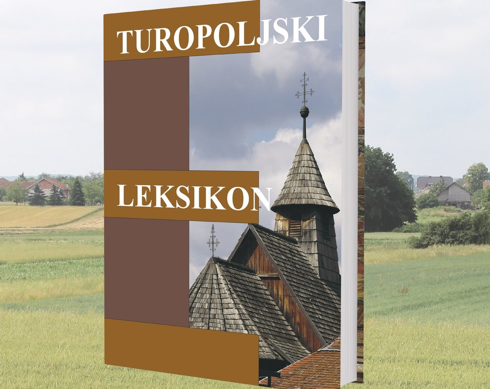
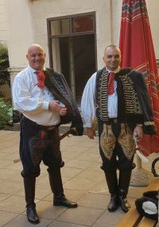

U srijedu 30. lipnja u 18 sati Leksikografski zavod Miroslav Krleža predstavio je u atriju zgrade u Frankopanskoj ulici najnovije izdanje iz niza »Enciklopedije i leksikoni hrvatskih gradova i regija«, nakon promocija u Velikoj Gorici 23. travnja i Mraclinu 15. lipnja. Turopoljski leksikon predstavlja bogatu materijalnu i duhovnu baštinu nizinskoga kraja koji je danas u sastavu Grada Zagreba te Zagrebačke i Sisačko-moslavačke županije. Ovo vrijedno izdanje predstavljeno je, svečano i u skladu s epidemiološkim ograničenjima medijima, suradnicima, čitateljima i zainteresiranim posjetiteljima koji su tom prigodom Turopoljski leksikon mogli kupiti po promotivnoj cijeni. O knjizi su govorili ravnatelj Leksikografskoga zavoda dr. sc. Filip Hameršak, suurednici Katja Matković Mikulčić, ravnateljica Gradske knjižnice Velika Gorica, i Mladen Klemenčić, geograf i leksikograf u Leksikografskome zavodu Miroslav Krleža te dr. sc. Mario Stipančević iz Hrvatskoga državnog arhiva. Svečanost je upotpunio nastup umjetnice i muzikologinje dr. sc. Lidije Bajuk.
Ravnatelj Filip Hameršak uvodnim je govorom pozdravio uzvanike i goste, zahvalivši svim suradnicima koji su sudjelovali u radu na Leksikonu i projekt uspjeli završiti u predviđenome roku, uzevši u obzir posebne okolnosti izazvane epidemijom i potresima. Povjesničar Mario Stipančević prisjetio se Emilija Laszowskog, povjesničara, arhivista i javnoga djelatnika, rođenoga 1868. u Brlogu na Kupi, ali autora opsežnih i nezaobilaznih prinosa proučavanju turopoljskoga kraja, stoga također uvrštenoga u Leksikon.
Urednica Katja Matković Mikulčić prisjetila se trogodišnjega rada na Leksikonu i suradnje s autorima članaka i ostalim sudionicima projekta koji su se tijekom tog razdoblja često okupljali u tzv. terenskoj redakciji Leksikona – prostoru Gradske knjižnice Velika Gorica. Posjetitelje je također upoznala sa strukturom ovoga leksikografskog izdanja, vrstom i brojem članaka te temama i načinom prikaza enciklopedijskoga sadržaja. Urednik Mladen Klemenčić istaknuo je da kapitalni projekti kao što je Turopoljski leksikon sa sobom nose mnoge izazove koji su u ovom projektu uspješno prevladani, naglasivši kako je ovo izdanje na gotovo 700 stranica rezultat zajedničkoga rada leksikografa i entuzijasta koji su prikupljali, popisivali, obrađivali i pisali vrijedne tekstove o Turopolju i Turopoljcima. Još je jednom zahvalio svima koji su pridonijeli radu, leksikografima i ostalim autorima članaka, likovnim i grafičkim suradnicima, stručnjacima i znanstvenicima, djelatnicima Leksikografskoga zavoda, a napose Turopoljkama i Turopoljcima koji su bili dobri domaćini i bez čijega sudjelovanja i prijegora ne bi bilo ni ove vrijedne enciklopedijske sinteze o turopoljskome kraju i vremenu u kojem je nastajao i čuva se njegov identitet.
Glazbenica Lidija Bajuk izvela je nekoliko tradicionalnih turopoljskih pjesama koje je zapisao Vojko Miklaušić, sakupljač turopoljske etnografske baštine. Teme turopoljske tradicijske glazbe najčešće su bile posvećene prirodi, svakodnevnomu životu i različitim obredima vezanima uz ciklus običaja od rođenja do smrti. Uzvanici i gosti na taj su način uživo mogli čuti melodije i iznimno elegičan kolorit turopoljskih napjeva koji su detaljno opisani i u Turopoljskome leksikonu. Posebno svečanoj atmosferi pridonijeli su članovi Turopoljskoga banderija, povijesne vojne postrojbe koje je počasni vod obnovljen prije gotovo 30 godina. Bili su odjeveni u tradicionalnu odoru koju čine podgutnica, crveni rubac oko vrata, kuna-kapa i menten, kaputić koji se nosi prebačen preko lijevoga ramena. Sa sobom su donijeli i stijeg s likom sv. Jurja, zaštitnika Turopolja.
Iz medija:
'Turopoljski leksikon' Leksikografskoga zavoda
Leksikografski zavod: Predstavljanje Turopoljskoga leksikona



Autorice fotografija: Jasmina Lukec i Senka Galenić